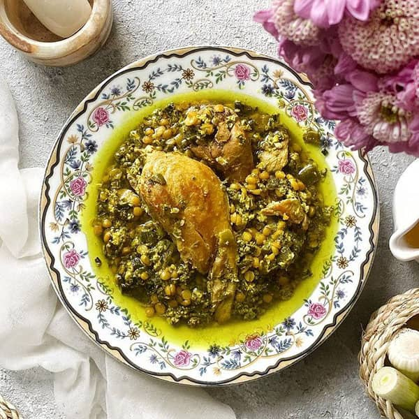

سیر قلیه
تاریخچه
سیر قلیه یکی از انواع غذاهای خوشمزه و سنتی ایرانی است که اصالت ان متعلق به شمال کشور می باشد.
مواد لازم
- مرغ یا اردک
ترجیح داده میشود محلی باشد
- لپه
- برگ سیر
- آب نارنج
- تخم مرغ
- نمک و فلفل سیاه
- زردچوبه و روغن
طرز تهیه
- ابتدا سیر را پاک کنید و برگ های آن را جدا کنید و ریز خرد کنید و چندین بار بشورید تا تمیز شود سپس آبکشی کنید کمی که خشک شد داخل تابه با مقداری روغن برگ های سیر را سرخ کنید تا رنگ آن تغییر کند.
- لپه را از چند ساعت قبل خیس کنید سپس آن را جداگانه نیم پز کنید و کف رویش را بگیرید این کار باعث می شود بوی نامطبوع لپه از بین برود.
- داخل ظرف مورد نظر کمی روغن ریخته تا داغ شود سپس مرغ را افزوده و کمی سرخ می کنیم تا تغییر رنگ دهد سپس برگ های سیر سرخ شده را همراه با نمک و فلفل و زردچوبه به آن اضافه کرده و هم بزنید در انتها ۲ لیوان آبجوش ریخته تا روی مرغ ها را بگیرید سپس اجازه دهید تا مرغ پخته شود.
- بعد از گذشت ۱ ساعت از زمان پخت مرغ لپه های نیم پز شده را به مرغ اضافه می کنیم و درب قابلمه را بگذارید تا لپه ها با مرغ نیز پخته شود.
- بعد از پخت لپه و مرغ نوبت اضافه کردن تخم مرغ است. تخم مرغ ها را می توانید مستقیم داخل سیر قلیه بشکنید یا در ظرفی جداگانه تخم مرغ را هم بزنید و به خورش سیر قلیه اضافه کنید و هم بزنید هر کدام روش را بنا به سلیقه و ذائقه خود انجام دهید سپس اجازه دهید تا تخم مرغ ها پخته شوند بعد از اینکه تخم مرغ ها سفت شدند از روی حرارت بر می داریم در ظرف سرو ریخته یا با همان ظرف سرو کنید.